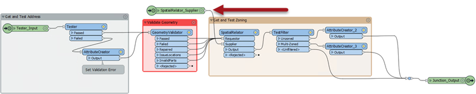

After completing this lesson, you’ll be able to:
The City is investigating the incorporation of OpenStreetMap data into its spatial datasets and open data portals. The first dataset under consideration is buildings. A colleague has already created a workspace to validate the OpenStreetMap data and compare it to other city datasets.
You see this workspace and wonder if parallel processing might make it more efficient. Let’s check it out!
Open the starting workspace.
As you’ll see, this workspace reads OpenStreetMap building data and then carries out several validation tasks. Firstly, it overlays it with the city address database to see if it has a matching address. Secondly, it tests the building geometry with a GeometryValidator transformer. Finally, it overlays the buildings against the city zoning data to see if it properly falls inside a single zone:
Turn on feature caching and run the workspace. Inspect the data at each step to become familiar with what it is doing. Specifically, take note of the feature counts so that we can be sure that any changes we make do not affect the results:

Although the workspace does not take long to run, consider that a custom transformer with parallel processing might improve performance.
The first thing to consider is managing data as separate groups for parallel processing. Because OSM is crowdsourced data, there’s no guarantee that any particular attribute will have values. If you check the source OSM data, you’ll notice that it has very few values for any attribute.
However, one of the early steps in the workspace copies address records onto each building. Because the address data is a city government dataset, we can take that as the definitive data and trust its contents. One of the attributes that it copies is POSTALCODE:

Postcodes - or at least the first three characters of a postcode - are an excellent way to divide data into groups.
So, select all objects after the PointOnAreaOverlayer (where POSTALCODE is obtained) but before the final writer feature type. Notice this includes the reader feature type for the MapInfo TAB reader and the junction just before the writer feature type:

Press Ctrl+T to turn the selected objects into a custom transformer. Give the transformer a name like BuildingValidator and set Attribute References to Handle with Published Parameters.
Click OK to create the custom transformer.
Inspect the custom transformer to see if its contents are what you are expecting. Interestingly the reader feature type does not appear in the definition but is piped in through a separate input port:

This result shows that you cannot have readers inside a custom transformer. We’ll leave it for now, but we might need to reconsider this later when we start parallel processing.
Speaking of which, we need an attribute for grouping data. POSTCODE (for example, V3E1J4) is too precise. It would be a building-by-building level of precision. However, the first three characters (V3E) would be more suitable.
So, back in the main workspace canvas, place a SubstringExtractor transformer between the PointOnAreaOverlayer and the newly created BuildingValidator. Use it to extract the first three characters of the POSTALCODE attribute into a new attribute:

Notice that the transformer counts characters from zero, so we need characters from 0 (zero) to 2 (two). Note that the author is writing the result to an attribute called PostcodePrefix.
Return to the custom transformer definition (the BuildingValidator tab). Look in the Navigator window for the Parallel Processing parameter. Double-click it and set the level of processing to Moderate:

Now return to the main canvas window. Open the parameters for the BuildingValidator custom transformer. For the Group By parameter, select the attribute PostcodePrefix:

Now it’s time to run the workspace. However, before you do, disable feature caching. Also, turn off Stop at Breakpoints if it is enabled.
The log window will now show several processes being started and stopped. You can open the task or process manager for your system to look for multiple FME processes running (note that some processes related to FME Server may exist if you have it installed and active). Look for fmeworker.exe, one of which should be running for each group.
Once complete, check the results. You won’t have feature counts in the custom transformer because it is in parallel processing mode. You can instead inspect the output dataset. Check if the number of features with a _ValidationZones attribute set to Unzoned Building matches the number of features (it might be easier to look for this sort of thing in the Data Inspector rather than Visual Preview).
Here the author is using the Filter tool to test for unzoned buildings:

It appears there are quite a lot of unzoned buildings (4,712). This result is a lot more than when you ran the workspace initially (250), so what is going on? Can you guess?
OK, the problem is the MapInfo TAB reader, which is reading the zoning data. We are parallel processing in groups of postal codes, but the zoning data does not have the same postcode prefix attribute. So one solution is to assign a postcode to each zone feature.
However, another solution is to ensure that each parallel process gets its own set of zoning data. We can do that by replacing the MapInfo reader with a FeatureReader transformer and moving it inside the custom transformer.
Firstly, in the main tab, delete the Zones feature type. This deletion will cause FME to prompt you to remove the MapInfo reader; click Yes.
Now switch to the BuildingValidator tab. Add a Creator transformer and a FeatureReader transformer, and connect them. Open the FeatureReader parameters and set it up to read the MapInfo TAB dataset Zones.tab:

Now connect the Zones output from the FeatureReader, into the SpatialRelator:Supplier port (in place of the SpatialRelator_Supplier Input object, which you can now delete):

Now re-run the workspace and check the output. This time only 250 features should have a value of Unzoned building for the _ValidationZones attribute, and 218 features should have a value of Overlapping zones building.
The workspace is now producing the correct results using parallel processing. But was it worth making these changes?
Since the initial workspace ran reasonably fast, the need for parallel processing was already low. The choice of the first three characters of the postcode gave us 17 groups. That’s not unreasonable, but it does mean FME had to start 17 different processes, which takes time.
We also chose Moderate processing, giving only one process per core. Perhaps our machines can handle more?
Plus, because the FeatureReader appears inside the transformer definition, we read the zoning data in every separate process. Is that overhead too significant? If not, could/should we do the same with the Geodatabase reader?
So, if you have time, re-run the workspace with a different processing level, say Aggressive. Does it run any quicker than the Moderate processing level? If not, why might that be? Does adjusting the number of tiles make it better or worse?
Also, try using just the first two characters of a postal code for our group (change the SubstringExtractor to fetch only characters 0-1). That produces fewer groups (only 4), but is it faster?
In summary, we’ve seen that parallel processing can require some careful thought and consideration when setting up. However, the rewards can be worth the setup time.